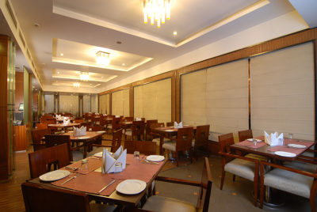
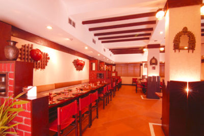

A multi cuisine restaurant serving Continental, Chinese and traditional Indian fare with the exclusive Chanakya stamp of flavour which has endeared itself to its local elite and made eating out at the Samarat a regular habit. The Earliest patrons recall that this facility was the first proper rendezvous for the elite in the city if they wanted a fine Evening eating out.

Cuisine : Indian
Timing : 7.00AM to 11.00PM
Serves specialty Indian food with a erstwhile North West Frontier Province flavour. The ambiance is typically ethnic down to the last piece of copper tableware. Connoisseurs swear it serves Kabab to die for. Its Mughali dishes have inspired many clients to finally opt in favour of keeping on living so that they can Savour each dish on the menu and get a taste of heaven while still on earth.
Cuisine : Indian
Timing : 7.30PM to 10.30PM